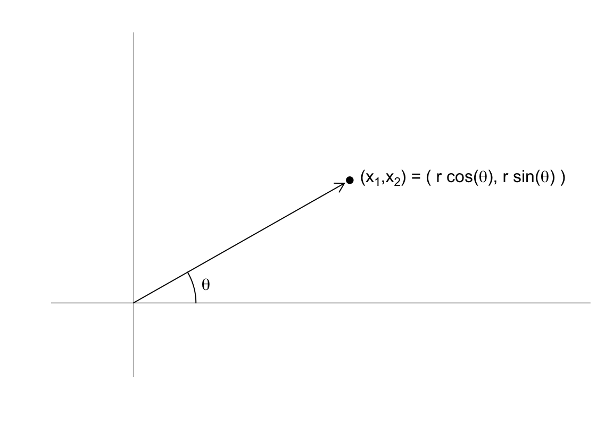
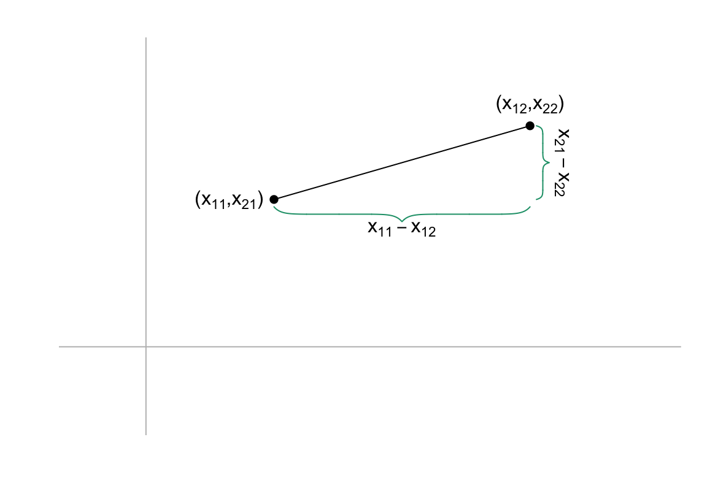
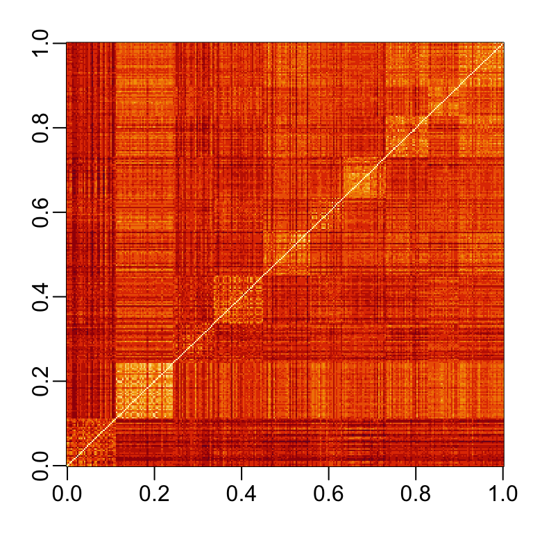

22 Applied Linear Algebra
Linear algebra is the main mathematical technique used to describe and motivate statistical methods and machine learning approaches. In this chapter, we introduce some of the mathematical concepts needed to understand these techniques. We use these concepts and techniques throughout the remainder of the book. ## Matrix multiplication
A commonly used operation in data analysis is matrix multiplication. Here, we define and motivate the operation.
Linear algebra originated from mathematicians developing systematic ways to solve systems of linear equations. For example:
\[ \begin{aligned} x + 3 y - 2 z &= 5\\ 3x + 5y + 6z &= 7\\ 2x + 4y + 3z &= 8 \end{aligned} \]
Mathematicians figured out that by representing these linear systems of equations using matrices and vectors, predefined algorithms could be designed to solve any system of linear equations. A basic linear algebra class will teach some of these algorithms, such as Gaussian elimination, the Gauss-Jordan elimination, and the LU and QR decompositions. These methods are usually covered in detail in university level linear algebra courses.
To explain matrix multiplication, define two matrices: \(\mathbf{A}\) and \(\mathbf{B}\)
\[ \mathbf{A} = \begin{pmatrix} a_{11}&a_{12}&\dots&a_{1n}\\ a_{21}&a_{22}&\dots&a_{2n}\\ \vdots&\vdots&\ddots&\vdots\\ a_{m1}&a_{m2}&\dots&a_{mn} \end{pmatrix}, \, \mathbf{B} = \begin{pmatrix} b_{11}&b_{12}&\dots&b_{1p}\\ b_{21}&b_{22}&\dots&b_{2p}\\ \vdots&\vdots&\ddots&\vdots\\ b_{n1}&b_{n2}&\dots&b_{np} \end{pmatrix} \]
and define the product of matrices \(\mathbf{A}\) and \(\mathbf{B}\) as the matrix \(\mathbf{C} = \mathbf{A}\mathbf{B}\) that has entries \(c_{ij}\) equal to the sum of the component-wise product of the \(i\)th row of \(\mathbf{A}\) with the \(j\)th column of \(\mathbf{B}\). Using R code, we can define \(\mathbf{C}= \mathbf{A}\mathbf{B}\) as follows:
Because this operation is so common, R includes a mathematical operator %*% for matrix multiplication:
C <- A %*% BUsing mathematical notation \(\mathbf{C} = \mathbf{A}\mathbf{B}\) looks like this:
\[ \begin{pmatrix} a_{11}b_{11} + \dots + a_{1n}b_{n1}& a_{11}b_{12} + \dots + a_{1n}b_{n2}& \dots& a_{11}b_{1p} + \dots + a_{1n}b_{np}\\ a_{21}b_{11} + \dots + a_{2n}b_{n1}& a_{21}b_{12} + \dots + a_{2n}b_{n2}& \dots& a_{21}b_{1p} + \dots + a_{2n}b_{np}\\ \vdots&\vdots&\ddots&\vdots\\ a_{m1}b_{11} + \dots +a_{mn}b_{n1}& a_{m1}b_{12} + \dots + a_{mn}b_{n2}& \dots& a_{m1}b_{1p} + \dots + a_{mn}b_{np}\\ \end{pmatrix} \]
Note this definition implies that the multiplication \(\mathbf{A}\mathbf{B}\) is only possible when the number of rows of \(\mathbf{A}\) matches the number of columns of \(\mathbf{B}\).
So how does this definition of matrix multiplication help solve systems of equations? First, any system of equations with unknowns \(x_1, \dots x_n\)
\[ \begin{aligned} a_{11} x_1 + a_{12} x_2 \dots + a_{1n}x_n &= b_1\\ a_{21} x_1 + a_{22} x_2 \dots + a_{2n}x_n &= b_2\\ \vdots\\ a_{n1} x_1 + a_{n2} x_2 \dots + a_{nn}x_n &= b_n\\ \end{aligned} \]
can now be represented as matrix multiplication by defining the following matrices:
\[ \mathbf{A} =\begin{pmatrix} a_{11}&a_{12}&\dots&a_{1n}\\ a_{21}&a_{22}&\dots&a_{2n}\\ \vdots&\vdots&\ddots&\vdots\\ a_{n1}&a_{n2}&\dots&a_{nn} \end{pmatrix} ,\, \mathbf{b} = \begin{pmatrix} b_1\\ b_2\\ \vdots\\ b_n \end{pmatrix} ,\, \mbox{ and } \mathbf{x} = \begin{pmatrix} x_1\\ x_2\\ \vdots\\ x_n \end{pmatrix} \]
and rewriting the equation simply as:
\[ \mathbf{A}\mathbf{x} = \mathbf{b} \]
The linear algebra algorithms listed above, such as Gaussian elimination, provide a way to compute the inverse matrix \(A^{-1}\) that solves the equation for \(\mathbf{x}\):
\[ \mathbf{A}^{-1}\mathbf{A}\mathbf{x} = \mathbf{x} = \mathbf{A}^{-1} \mathbf{b} \]
To solve the first equation we wrote out in R, we can use the function solve:
The function solve works well when dealing with small to medium-sized matrices with a similar range for each column and not too many 0s. The function qr.solve can be used when this is not the case.
22.1 The identity matrix
The identity matrix, represented with a bold \(\mathbf{I}\), is like the number 1, but for matrices: if you multiply a matrix by the identity matrix, you get back the matrix.
\[ \mathbf{I}\mathbf{X} = \mathbf{X} \]
If you define \(\mathbf{I}\) as matrix with the same number of rows and columns (referred to as square matrix) with 0s everywhere except the diagonal,
\[ \mathbf{I}=\begin{pmatrix} 1&0&\dots&0\\ 0&1&\dots&0\\ \vdots&\vdots&\ddots&\vdots\\ 0&0&\dots&1 \end{pmatrix}, \]
you will obtain the desired property.
Note that the definition of an inverse matrix implies that:
\[ \mathbf{A}^{-1}\mathbf{A} = \mathbf{1} \]
Because the default for the second argument in solve is an identity matrix, if we simply type solve(A), we obtain the inverse \(\mathbf{A}^{-1}\). This means we can also obtain a solution to our system of equations with:
22.2 Distance
Many of the analyses we perform with high-dimensional data relate directly or indirectly to distance. For example, most machine learning techniques rely on being able to define distances between observations, using features or predictors. Clustering algorithms, for example, search for observations that are similar. But what does this mean mathematically?
To define distance, we introduce another linear algebra concept: the norm. Recall that a point in two dimensions can be represented in polar coordinates as:

with \(\theta = \arctan{\frac{x2}{x1}}\) and \(r = \sqrt{x_1^2 + x_2^2}\). If we think of the point as two dimensional column vector \(\mathbf{x} = (x_1, x_2)^\top\), \(r\) defines the norm of \(\mathbf{x}\). The norm can be thought of as the size of the two-dimensional vector disregarding the direction: if we change the angle, the vector changes but the size does not. The point of defining the norm is that we can extrapolate the concept of size to higher dimensions. Specifically, we write the norm for any vector \(\mathbf{x}\) as:
\[ \|\mathbf{x}\| = \sqrt{x_1^2 + x_2^2 + \dots + x_p^2} \]
Note that we can use the linear algebra concepts we have learned to define the norm like this:
\[ \|\mathbf{x}\|^2 = \mathbf{x}^\top\mathbf{x} \]
To define distance, suppose we have two two-dimensional points: \(\mathbf{x}_1\) and \(\mathbf{x}_2\). We can define how similar they are by simply using euclidean distance:

We know that the distance is equal to the length of the hypotenuse:
\[ \sqrt{(x_{11} - x_{12})^2 + (x_{21} - x_{22})^2} \]
The reason we introduced the norm is because this distance is the size of the vector between the two points and this can be extrapolated to any dimension. The distance between two points, regardless of the dimensions, is defined as the norm of the difference
\[ \| \mathbf{x}_1 - \mathbf{x}_2\|. \]
If we use the digit data, the distance between the first and second observation will compute distance using all 784 features:
\[ \| \mathbf{x}_1 - \mathbf{x}_2 \| = \sqrt{ \sum_{j=1}^{784} (x_{1,j}-x_{2,j })^2 } \]
To demonstrate, let’s pick the features for three digits:
x_1 <- x[6,]
x_2 <- x[17,]
x_3 <- x[16,]We can compute the distances between each pair using the definitions we just learned:
In R, the function crossprod(x) is convenient for computing norms. It multiplies t(x) by x:
Note crossprod takes a matrix as the first argument. As a result, the vectors used here are being coerced into single column matrices. Also, note that crossprod(x,y) multiplies t(x) by y.
We can see that the distance is smaller between the first two. This agrees with the fact that the first two are 2s and the third is a 7.
y[c(6, 17, 16)]
#> [1] 2 2 7We can also compute all the distances at once relatively quickly using the function dist, which takes a matrix as input and computes the distance between each row and produces an object of class dist:
This is convenient becasue there are several machine learning related functions in R that take objects of class dist as input.
We can see the distance we calculated above like this:
d
#> 1 2
#> 2 2320
#> 3 2331 2519Note that the diagonal is omitted because all self-distances are zero, and the upper triangle is also excluded due to the symmetry of the distance matrix, which follows from the fact that distance is commutative.
To access the entries using row and column indices, we need to coerce it into a matrix.
The image function allows us to quickly see an image of distances between observations. As an example, we compute the distance between each of the first 300 observations and then make an image:
If we order this distance by the labels, we can see yellowish squares near the diagonal. This is because observations from the same digits tend to be closer than to different digits:

22.3 Spaces
Predictor space is a concept that is often used to describe machine learning algorithms. The term space refers to an advanced mathematical definition for which we provide a simplified explanation to help understand the term predictor space when used in the context of machine learning algorithms.
We can think of all predictors \((x_{i,1}, \dots, x_{i,p})^\top\) for all observations \(i=1,\dots,n\) as \(n\) \(p\)-dimensional points. A space can be thought of as the collection of all possible points that should be considered for the data analysis in question. This includes points we could see, but have not been observed yet. In the case of the handwritten digits, we can think of the predictor space as any point \((x_{1}, \dots, x_{p})^\top\) as long as each entry \(x_i, \, i = 1, \dots, p\) is between 0 and 255.
Some Machine Learning algorithms also define subspaces. A commonly defined subspace in machine learning are neighborhoods composed of points that are close to a predetermined center. We do this by selecting a center \(\mathbf{x}_0\), a minimum distance \(r\), and defining the subspace as the collection of points \(\mathbf{x}\) that satisfy:
\[ \| \mathbf{x} - \mathbf{x}_0 \| \leq r. \]
We can think of this subspace as a multidimensional sphere since every point is the same distance away from the center.
Other machine learning algorithms partition the predictor space into non-overlapping regions and then make different predictions for each region using the data in the region. We will learn about these in Section 31.4.
22.4 Exercises
1. Generate two matrices, A and B, containing randomly generated and normally distributed numbers. The dimensions of these two matrices should be \(4 \times 3\) and \(3 \times 6\), respectively. Confirm that C <- A %*% B produces the same results as:
2. Solve the following system of equations using R:
\[ \begin{aligned} x + y + z + w &= 10\\ 2x + 3y - z - w &= 5\\ 3x - y + 4z - 2w &= 15\\ 2x + 2y - 2z - 2w &= 20\\ \end{aligned} \]
3. Define x and y:
mnist <- read_mnist()
x <- mnist$train$images[1:300,]
y <- mnist$train$labels[1:300]and compute the distance matrix:
Generate a boxplot showing the distances for the second row of d stratified by digits. Do not include the distance to itself, which we know is 0. Can you predict what digit is represented by the second row of x?
4. Use the apply function and matrix algebra to compute the distance between the fourth digit mnist$train$images[4,] and all other digits represented in mnist$train$images. Then generate a boxplot as in exercise 2 and predict what digit is the fourth row.
5. Compute the distance between each feature and the feature representing the middle pixel (row 14 column 14). Create an image plot of where the distance is shown with color in the pixel position.